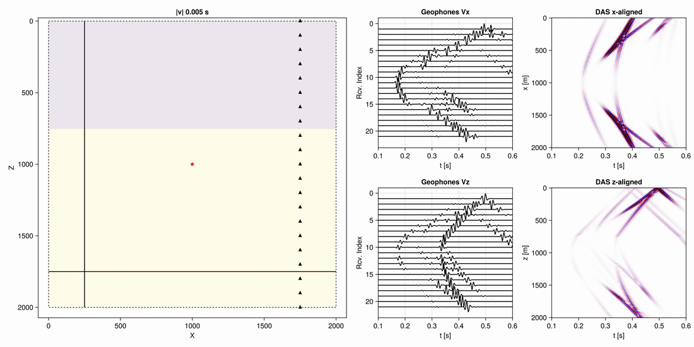

ElasticFDSG.jl
ElasticFDSG.jl is a Julia package for simulating elastic wave propagation in 2D and 3D heterogeneous anisotropic media. It solves the elastic wave equation in the velocity–stress formulation using a finite-difference staggered-grid (FDSG) scheme.
The package was developed with a focus on a clean, user-friendly workflow: simulations are fully described by a velocity model and a configuration dictionary (or YAML file), and results are saved to HDF5 and loaded back into a nested Julia dictionary.
Features
- 2D and 3D elastic forward modelling on regular grids.
- Vendor-neutral CPU and GPU kernels (CUDA, Metal, AMDGPU, oneAPI) via KernelAbstractions.jl.
- Spatial finite-difference operators of order 1-10.
- Second-order leapfrog time integration.
- Heterogeneous isotropic and VTI 2D models (Thomsen parameters).
- Heterogeneous isotropic, VTI, and orthorhombic 3D models (Tsvankin parameters).
- Convolutional Perfectly Matched Layer (C-PML) absorbing boundaries.
- Moment tensor sources.
- Geophone receivers (point particle velocity).
- DAS receivers (axial strain along coordinate-aligned profiles).
- Wavefield snapshots.
- Results saved to HDF5.
A step-by-step user guide can be found in the User Guide. Working examples are available in the examples/ directory of the repository.
Installation
julia> using Pkg
julia> Pkg.add(url="https://github.com/wtegtow/ElasticFDSG.jl")Quick start
using ElasticFDSG
h = 5.0
x = 0:h:2000
z = 0:h:2000
nx = length(x); nz = length(z)
X = zeros(nx, nz)
Z = zeros(nx, nz)
@inbounds for i in 1:nx, j in 1:nz
X[i, j] = x[i]
Z[i, j] = z[j]
end
# velocity model (two layers, interface at z = 750 m)
vp = fill(3500.0, nx, nz); vp[:, z .> 750] .= 4500.0
vs = fill(2200.0, nx, nz); vs[:, z .> 750] .= 2600.0
rho = fill(2200.0, nx, nz); rho[:, z .> 750] .= 2600.0
eps = fill(0.4, nx, nz)
del = fill(-0.1, nx, nz)
# assemble velmod array (7 x nx x nz)
velmod = zeros(7, nx, nz)
velmod[1,:,:] .= X
velmod[2,:,:] .= Z
velmod[3,:,:] .= vp
velmod[4,:,:] .= vs
velmod[5,:,:] .= rho
velmod[6,:,:] .= eps
velmod[7,:,:] .= del
# config
config = Dict(
"settings" => Dict(
"device" => "cpu",
"precision" => "Float64",
"spatial_derivative_order" => 4,
"verbose" => true,
"output_file" => joinpath(@__DIR__, "demo.h5"),
),
"time" => Dict(
"start" => 0,
"end" => 1,
"timestep" => 0.001,
),
"source" => Dict(
"dominant_frequency" => 60.0,
"wavelet_type" => "ricker",
"wavelet_center" => 0.05,
"seismic_moment" => 1e6,
"location" => Dict(
"x" => 1000.0,
"z" => 1000.0,
),
"moment_tensor" => Dict(
"Mxx" => 1.0,
"Mxz" => 0.0,
"Mzz" => -1.0,
),
),
"boundaries" => Dict(
"xstart" => "absorbing",
"xend" => "absorbing",
"zstart" => "none",
"zend" => "absorbing",
"pml_layer" => 10,
),
"receivers" => Dict(
"geophones" => [Dict("x"=>1750, "z"=> zi) for zi in 0:100:2000],
"das" => Dict(
"x_aligned" => [Dict("x" => Dict("start" => 0, "step" => h, "end" => 2000), "z" => 1750)],
"z_aligned" => [Dict("x" => 250, "z" => Dict("start" => 0, "step" => h, "end" => 2000))],
),
"snapshots" => Dict(
"times" => collect(LinRange(0, 1, 200)),
"fields" => ["vx", "vz"],
),
),
)
runsim(config, velmod)
results = load_results(config["settings"]["output_file"])results contains all the information required for post-processing and can be used to visualize the specified receivers:

Citing
If you find ElasticFDSG.jl usefull for your research, consider citing:
@misc{ElasticFDSG,
author = {William Tegtow},
title = {ElasticFDSG.jl: Simulating elastic wave propagation in 2D and 3D anisotropic media.},
year = {2025},
doi = {https://doi.org/10.5281/zenodo.14872584}
}